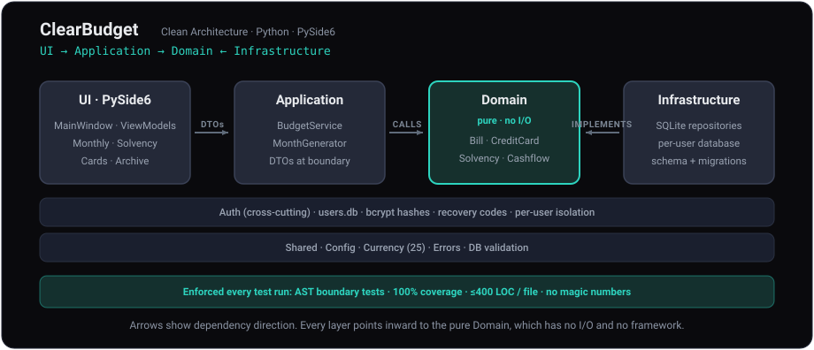

Most budgeting apps are retrospective ledgers that tell you where the money went. Clear Budget is forward-looking: it projects solvency for the months ahead and warns about mid-month overdrafts before they happen.
What Clear Budget does
Most budgeting software is retrospective. Clear Budget looks forward instead.
Forward solvency
Projects the next two months and answers the only operational question that matters: will the balance hold?
Mid-month overdraft alerts
Catches the dip when bills cluster before payday, even when the month still ends positive.
Credit card pressure
Per-card utilisation, interest and a six-month balance projection, colour-coded by available headroom.
Bill and income timing
Per-month skips, amount and due-day overrides, paid and received flags, and one-off entries, without touching templates.
Private by design
Per-user isolated databases with a bcrypt sign-in and read-only viewer packages. No cloud, no account servers.
25 currencies
Choose your currency once and every figure follows it. Defaults to GBP.
Four views, one question
Each tab is a different angle on whether the month, and the months ahead, hold together.
Monthly Budget
Bills and income for the month, with the running balance or projected month-end figure and a mid-month overdraft warning.
Solvency
Overdraft status, a day-by-day forward projection for the next two months, and per-card utilisation bars.
Credit Cards
One panel per card with live pro-rated balances, and a six-month projection strip across every card.
Archive
Completed months summarised by year, with drill-down into any individual month.
Built like the apps I trust
A clean, four-layer architecture with every dependency pointing inward to a pure domain. Boundaries are enforced by AST tests, 100% coverage, a 400-line file limit and a no-magic-numbers rule.

Why it exists
Most tools treat money as a flat number and answer one question after the fact: where did the money go? That is the wrong question to act on. The useful model is the one that surfaces a failure mode early enough to do something about it.
So Clear Budget tracks solvency rather than accounting. It models the operational shape of a month, when income lands and when bills fall, and tells you whether the balance survives the gaps.
It is dogfood, in the full sense of the word: the application I open to decide whether my own month holds together. The features exist because I needed them, not because they demonstrated well.
Frequently asked questions
Is Clear Budget free?
Yes. Clear Budget is free and open source, released under the GNU LGPL-3.0 licence.
Does Clear Budget work offline?
Yes. Clear Budget is local-first and runs entirely offline. It has no cloud dependency and never sends your financial data anywhere.
Which platforms does Clear Budget run on?
Windows, macOS and Linux, from a single PySide6 codebase. Windows ships as an installer, macOS as a signed .dmg, and Linux as a Flatpak.
Is my financial data private?
Yes. Data is stored locally in isolated per-user databases on your own machine, protected by a bcrypt sign-in, and is never transmitted to any server.
Does Clear Budget support multiple users and currencies?
Yes. It supports multiple users with separate, isolated databases and read-only viewer packages, and 25 currencies covering English-speaking countries, defaulting to GBP.
Runs everywhere, stores nothing remotely
One PySide6 codebase, native packages on all three platforms. Each build ships everything it needs.
Windows
Per-user installer
macOS
Signed .dmg, tested on Sequoia
Linux
Flatpak